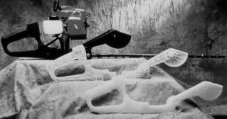

|
|
|
| Home | Previous Page |
Next Page |
Applications > Engineering
> Rapid Prototyping:
Yeni ürün geliþtirme sürecinde
hýzlý prototip imalatý sayesinde, olabilecek tasarým hatalarýný
kýsa zamanda teþhis etme ve ürünü en kýsa sürede piyasaya
çýkarabilme mümkün olmaktadýr. Prototipler,
tasarým ekibi,
imalat ekibi ve pazarlama ekibi arasýndaki irtibatý ve
ortak çalýþma verimliliðini de arttýrýr.
Eðer üretilen modelin malzeme
özellikleri istenildiði gibi deðilse, silikon
kalýplama teknikleriyle (RTV silicon molding) daha
sert, esnek veya farklý optik özelliklere sahip malzemelerden
çok sayýda prototip imal edilerek istenilen performansa
ulaþýlabilir. Ayrýca, asýl amaç metal bir prototip elde
etmekse, hassas döküm
çok uygun bir teknolojidir. Aslýnda bu gibi ara dönüþtürme
yöntemleri uzun yýllardýr biliniyordu ama asýl problem
ilk modelin hýzlý ve hatasýz biçimde yapýlabilmesiydi.
Artýk çeþitli autofabrication teknolojileri ile bu problem aþýldýðý
için model dönüþtürme teknolojileri
(conversion technologies) üzerinde yeni araþtýrma kapýlarý
açýlmýþtýr... |
| Functional
Prototypes |
|
|
|
| Bilgisayar yardýmýyla
tasarlanmýþ yeni bir telefonun ekrandaki görüntüsü. |
Soldaki CAD verisine
baðlý olarak SLA ile inþa edilmiþ telefon prototipi. |
|

Solda: DTM firmasýnýn
SLS teknolojisi ile "nylon" tozu kullanýlarak üretilmiþ
olan bu motorlu testerenin plastik gövdesi direkt olarak
testlerde kullanýlabilecek mukavemete sahiptir.
Saðda: Stratasys/
FDM teknolojisi ile üretilmiþ prototipler. |
 Solda: Bir bebek
sandalyesi tasarýmý
Solda: Bir bebek
sandalyesi tasarýmý
Ortada: Bu veri
kullanýlarak DTM/ SLS teknolojisi ile inþa edilmiþ fonksiyonel
prototip.
Saðda: Stratasys/
FDM ile ergonomi testleri için inþa edilmiþ bir sandalye,
bir insanýn yükünü kaldýrabilecek kadar mukavimdir. |
  Solda: Bu seramik
parçalar FDM teknolojisi yardýmý ile imal edilmiþtir.
Solda: Bu seramik
parçalar FDM teknolojisi yardýmý ile imal edilmiþtir.
Ortada: Teijin Seiki,
kullandýðý özel bir fotopolimer ile esnek modeller üretebilir.
Saðda: DTM/ SLS
ile üretilen bu el aleti gövdesi, normal testlerde kullanýlabilecek
mukavemettedir. |
Solda: Porshe firmasý
yeni geliþtirdiði bir motorun silindir baþlýklarý soðutma
performansýný test etmek için SLA teknolojisi ile bir
prototip imal etmiþtir. Prototip þeffaf olduðu için soðutma
sývýsýna katýlan hava kabarcýklarý vasýtasýyla sývýný
akýþý baþarýyla gözlenebilmiþtir.
Saðda: 3D Systems/SLA
ile imal edilmiþ bir TV gövdesi prototipi. |
 Saðda
görülen ve Materialise
tarafýndan 2002 yýlýnda geliþtirilen yüksek kapasiteli
Mammoth III modeli stereolitografi cihazý otomotiv sektöründen
gelen ihtiyaçlar doðrultusunda bir torpido veya tamponun
fonksiyonel prototipini tek parça halinde inþa
edebilecek kapasitededir. Saðda
görülen ve Materialise
tarafýndan 2002 yýlýnda geliþtirilen yüksek kapasiteli
Mammoth III modeli stereolitografi cihazý otomotiv sektöründen
gelen ihtiyaçlar doðrultusunda bir torpido veya tamponun
fonksiyonel prototipini tek parça halinde inþa
edebilecek kapasitededir. |
| Metal Prototypes via Investment Casting |
3D Systems/ SLA Quick
Cast (Çabuk Döküm) denilen bir inþa yöntemiyle hassas
döküme elveriþli modeller inþa edilebilir:
Sol Üst Resim: Bu
teknoloji ile dökülmüþ Mercedes'e ait bir motor gövdesi
Sað Üst Resim: Prototip
motor testleri için hassas dökümle imal edilmiþ karmaþýk
yapýlý bir motor hava giriþ manifoldu; Ford için geliþtirilen
bu parçanýn döküm modeli CIBATOOL SL 5180 reçinesinden
SL QuickCast
stili ile imal edilmiþ ve A356-T6 alüminyum malzemeden
dökülmüþtür.
Altta Ortadaki Resim:
Büyük boy bir jet motoru parçasý dökümü, SLA/quickcast
modeli ile yan yana görülmekte.
|
|

Solda:
DTM/ SLS "Polycarbonate" tozu ile üretilen modeller
hassas döküm teknolojisi için de uygundur. Arka planda
model, önde ise dökümle elde edilmiþ metal parça görülmekte.
Sonralarý döküm için daha uygun olan polistren tozu
inþa malzemesi olarak kullanýma girmiþtir. Ýnþa sýrasýnda
kalan gözeneklere erimiþ mum emdirilerek seramik malzemenin
gözeneklere girmesi engellenir.
Saðda: Helisys/
LOM yardýmýyla dökülmüþ bir diþli kutusu gövdesi.
|
Aþaðýda,
Helisys LOM sisteminin kullanýldýðý örnek bir metal ürün
tasarým ve hýzlý prototip uygulamasýnýn safhalarý görülmektedir:
| 1.
Bigisayar üzerinde gaz akýþý hesap ve simülasyonlarý
ile tasarlanmýþ karmaþýk yapýlý bir parçanýn deðiþik
kesitlerdeki gaz özellikleri deðiþik renklerde belirtilmiþtir |
2.
Bilgisayar ekranýnda üretilmesi gerekli parça son
halini almýþ |
| 3.
Bu parça Helisys LOM teknolojisi ise kat kat
kaðýttan inþa edilmiþ |
4.
Bu kaðýt model, hassas
döküm yöntemi kullanýlarak gaz karýþtýrma ünitesinin
ilk çelik prototipi kolaylýkla imal edilmiþ. |
Not: 1,2 ve 4 numaralý
resimlerdeki teknolojiler son 15 yýldýr zaten vardý ama
3. resimdeki autofabrication teknolojisinin bulunmasý bu prototip
imalatýnda el iþçiliðinin gereðini önemli ölçüde azaltmýþtýr.
|
|
 Saðda:
Soligen'in
DSPC tekniðiyle inþa edilen seramik bir kalýp kullanýlarak
hassas döküm yöntemiyle imal edilmiþ bir çelik parça.
Soligen autofabrication cihazlarýný satmak yerine dýþarýya servis
vermeyi tercih etmektir. Modem ile müþteriden aldýðý
3 boyutlu geometri verisini kullanarak çelik parçalarý
bir hafta içinde hazýr edip geri postalayabilmektedir.
Bu iþlem normalde 3 ay civarýnda sürer... Saðda:
Soligen'in
DSPC tekniðiyle inþa edilen seramik bir kalýp kullanýlarak
hassas döküm yöntemiyle imal edilmiþ bir çelik parça.
Soligen autofabrication cihazlarýný satmak yerine dýþarýya servis
vermeyi tercih etmektir. Modem ile müþteriden aldýðý
3 boyutlu geometri verisini kullanarak çelik parçalarý
bir hafta içinde hazýr edip geri postalayabilmektedir.
Bu iþlem normalde 3 ay civarýnda sürer...
|
Z
Corp. / ZCast Prosesi ile direkt döküm kalýbý inþasý:
Bu
uygulama ile alçý-seramik karýþýmlý bir çeþit toz inþa
malzemesi kullanýlarak prototip döküm kalýp ve maçalarý
direkt olarak inþa edilebilmektedir. ZCast 500 isimli
bu toz inþa malzemesi ile alüminyum, çinko ve magnezyum
gibi düþük ergime sýcaklýðýna sahip paslanmaz metaller
dökülebilmektedir. Saðda, ZCast prosesi ile elde edilmiþ
bir döküm kalýbý, maçasý ve bu kalýptan dökülmüþ alüminyum
bir parça görülmektedir. |
| Optik gerilim analizi
uygulamalarý:
Deneysel gerilim ve
mukavemet analizinde etkili bir yöntem olarak mühendislikte
uzun yýllardýr kullanýlmakta olan optik gerilim analizi
(optical stress analysis veya photoelasticimetry) tekniklerinde
kullanýlacak modeller artýk uygun (aktif) optik özelliklere
sahip þeffaf fotopolimer reçinelerle hýzlý ve kolay
ve ucuz bir þekilde Stereolitografi (SL) cihazlarýyla
direkt olarak imal edilebiliyor:
Fransýz uçak motoru
tasarým ve geliþtirme grubu Snecma (Societe Nationale
d'Etude et Construction de Moteurs d'Aviation) 1992
yýlýnda fotopolimer reçine üreticisi Ciba-Geigy (yeni
adýyla Vantico) ile SL epoksi reçinelerinin optik gerilim
analizi tekniklerinde uygulanmasý için iþbirliðine baþlamýþlardýr.
Soldaki resimde
görülen 70cm çapýndaki türbin rotor ve kanat modeli
9 parça halinde 3D Systems SL cihazlarýyla CIBATOOL
SL 5170 reçinesi kullanýlarak imal edilmiþ ve her parçanýn
inþasý 30 saat sürmüþtür. Parçalarý birleþtrip test
için hazýrlamak ise iki hafta sürmüþtür. Toplam test
projesi böylece 1 ayda tamamlanmýþtýr.
9 ay süren ve iki kat
maliyeti olan eski teknikte ise öncelikle talaþlý imalatla
modeller üretiliyor ve ardýndan silikon kalýplama ile
þeffaf test parçalarý üretiliyordu. Silikon kalýplama
için modeller SL tekniði ile de imal edilebiliyordu
ama SL modellerinin direkt testlerde kullanýlabiliyor
olmasý daha hýzlý ve ucuz bir çözüm imkaný sunmuþtur.
Direkt SL ile model imalatý özellikle silikon kalýplama
ile bile tek parça halinde üretilmesi çok zor, karmaþýk
yapýlý parçalarýn üretilmesi ve testi için çok uygundur.
Saðda, rüzgar
tünelinde yapýlan testler sonrasýnda türbin kanatlarý
üzerinde merkezkaç ve aerodinamik kuvvetlerden oluþan
gerilimlerin daðýlýmý görülmektedir. Bunun için deneye,
reçinenin "cam geçiþ fazýna" (glass transition phase)
ulaþacaðý yaklaþýk 100 °C sýcaklýktaki bir ortamda baþlanýr.
Gerilim altýnda oluþan deformasyonlarýn kalýcý olabilmesi
için sýcaklýk yavaþça düþürülür ve test tamamlanýr.
Daha sonra polarize bir ýþýk altýnda model incelendiðinde
gerilim daðýlýmýyla orantýlý oluþan gökkuþaðý renkleri
kolayca görüntülenebilir. Siyah bölgeler hiç gerilimin
olmadýðýný, sýk deðiþen parlak renklerin olduðu bölgeler
yüksek gerilimi, yumuþak renk deðiþimi ise düþük gerilimi
gösterir.
Referans: (3D Systems)
The Edge, summer 1994
|
| Home | Previous Page |
Next Page | |
|